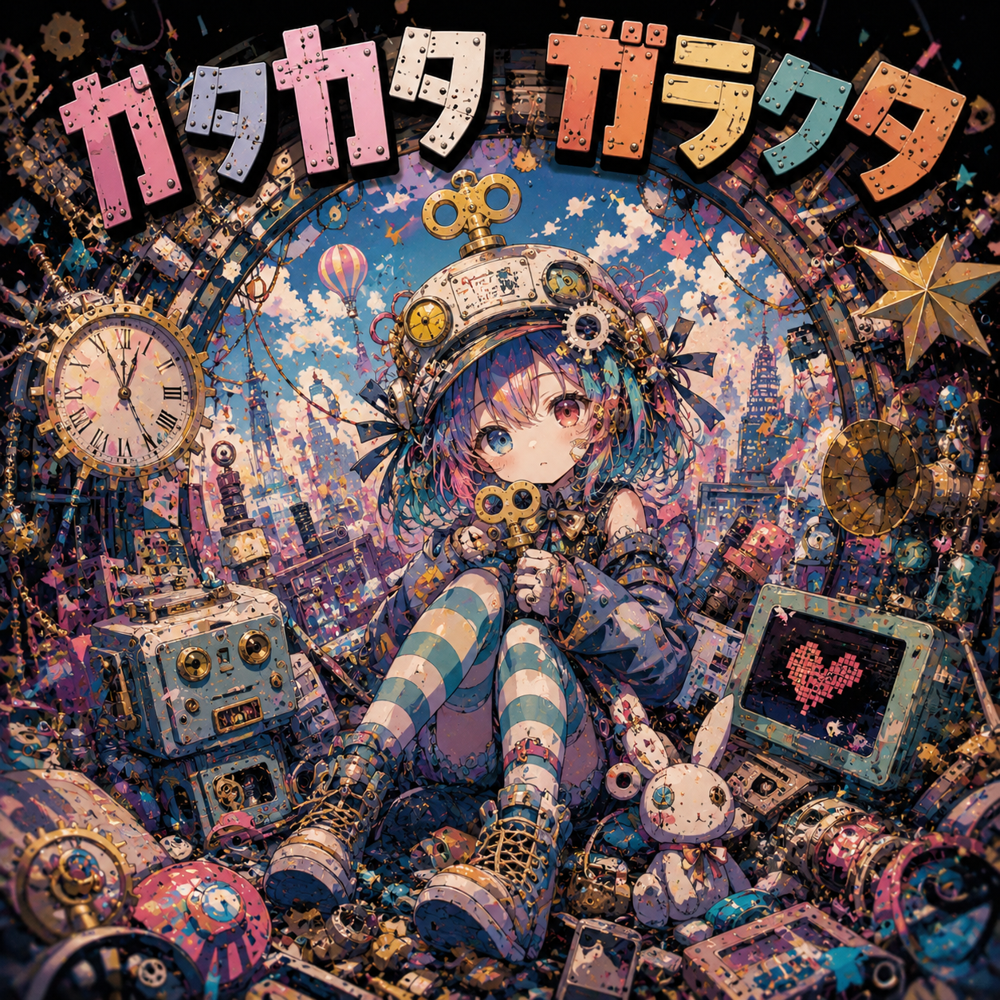
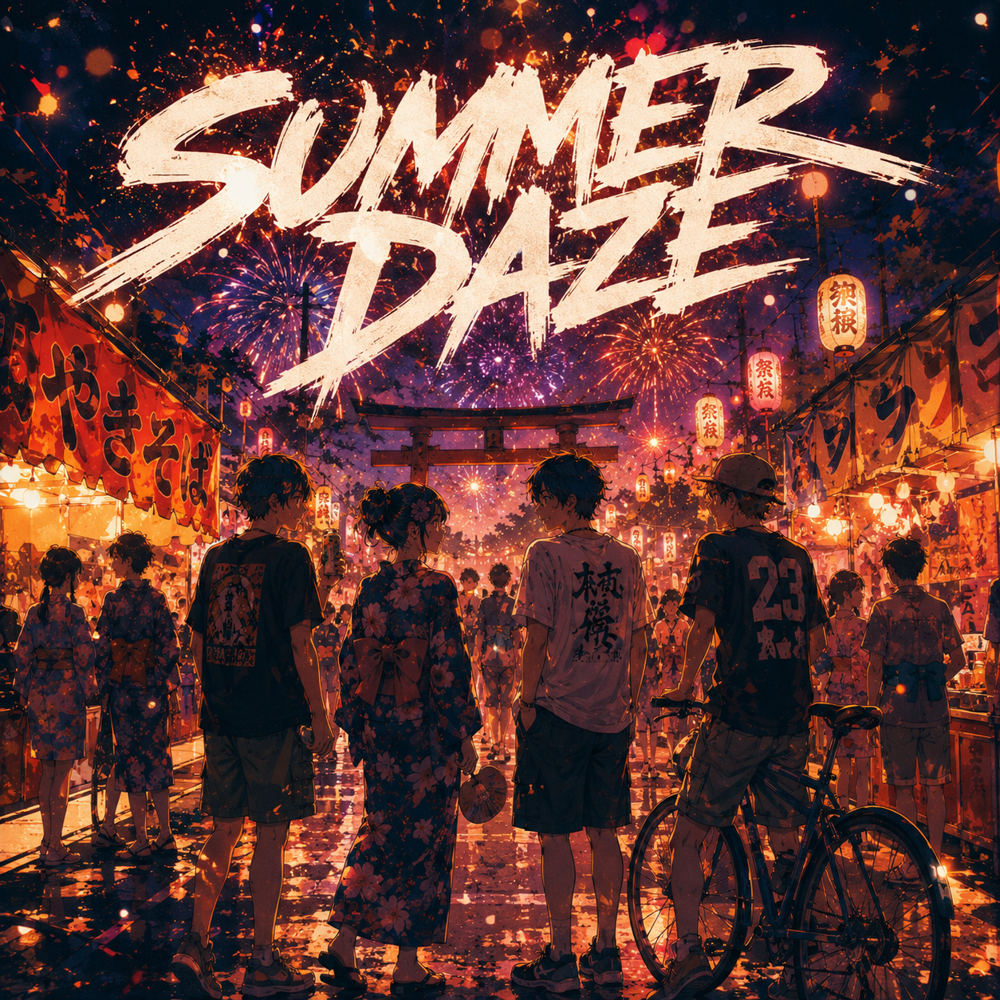

Produced by nemu hazama
カタカタ カラカラ
回る 回る ぜんまい
ピカピカ ガラクタ
ようこそ 新鮮な ユートピア
機械仕掛けの ぜんまいが
ギチギチ 胸で 跳ねている
その表現は すでに
使われております ってね
テンプレ コピペの 街の中
ピカソも たぶん しかめっつら
真似るっ？ 学ぶっ？
その境目で また バグる
参考 引用 リスペクト
でも それだけじゃ 足りないでしょ
君の ノイズを 混ぜたなら
それは ちゃんと 息をする
ぐるぐる 回って
キラキラ 壊れて
へんてこなくらいが 気持ちいい
ねぇ そうでしょ？
真似るっ？ 学ぶっ？
いつだって 僕らは
新鮮な ユートピア
作って 壊して また 笑う
チクタク ビリビリ
脳みそで 踊るビート
へんてこぼこで 最高峰
ガラクタみたいな 夢を 飛べっ
正解なんて 知らないし
けど つまんないのは もっと嫌
誰かの 言葉を なぞっても
同じ心にゃ ならないし
ハリボテだらけの ショーケース
ご立派な タグが 並んでる
でも 汚れた 手のひらに
いちばん ホントが 残ってる
エラー 警報 採点中
それでも 心臓 能天気
壊れた ネジで 回るから
へんてこ光が 出るでしょ
くらくら するほど
ギラギラ したいの
綺麗じゃなくても いいからさ
愛してよ
真似るっ？ 学ぶっ？
いつだって 僕らは
新鮮な ユートピア
塗り替え 繋げて また 進む
チクタク ビリビリ
全身で 刻むビート
ダサいくらいで さぁ行こう
夢中の先へ 飛んじゃって
「その表現は すでに
使われております」
うるさいな
そんなの わかってるけど
ここで 光ってるしかないの
まっさらじゃなきゃ
意味がないなんて
誰が 決めたの？
混ざって 濁って
それでも ちゃんと
新しいでしょ
真似るっ？ 学ぶっ？
その間で 僕らは
新鮮な ユートピア
何度も 何度も バースデー
チクタク ギラギラ
脳内で はぜるビート
へんなままで さぁ異常
ガラクタ仕掛けで 未来へ 飛べっ
カタカタ カラカラ
回る 回る ぜんまい
ピカピカ ガラクタ
ようこそ 新鮮な ユートピア

Produced by nemu hazama
ayy
蒸っし蒸し
風死んでる商店街
祭囃子
鳴りっぱなし
脳みそバグる大体
「集合、神社前」
既読つかねぇアイツ待ち
convenience ice
溶ける faster
もう手ベタベタ nasty
焼きそば
フランク
ラムネ
beer
ソース匂いでキマる mid-summer
浴衣 girl
下駄ズレ pain
「歩けない」とか言いつつ笑ってる
汗だく boy
だるそう face
でもなんか帰りたくねぇ
ぎゅうぎゅう crowded
イラつく loudness
なのに一人だとちょい寂しい
だっせぇ青春
せめぇ地元
チャリ二ケツで蛇行運転
先生いたら終わり案件
でも今夜だけ世界俺ら中心
same town
same age
same school
same curse
ただ集められただけの crew
来年には
散り散りになるって
わかってんのに笑ってる
ドンッ!!
って夜空 crack
赤 青 yellow
flash flash flash
うるせぇくらい綺麗な fireworks
汗
熱
風
noise
全部ぐちゃぐちゃ mixed up
「青春とかクサくね？」
とか言ってた俺らが
今日だけちょっと
終わるの怖ぇ
「東京行くらしい」
「マジ？」
「へぇ」
それ以上続かない talk
夢とか future とか
語れるほどガキでもねぇし
屋台の灯り
テカる横顔
火薬の煙でぼやける輪跨
誰かが歌う変なラップ
知らんガキ泣いてる
semi still alive
俺ら almost dead
夏休み終盤テンション
神社の階段
座って silence
なのに妙に落ち着く midnight
仲間？
友情？
青春？
…いやいや(笑)
そんな綺麗なもんじゃねぇ
ウザいし
ダルいし
狭いし
暑いし
でも
終わる瞬間だけ
why so beautiful...
最後の尺玉
腹まで響く bass
歓声 wave
夜風 fade
駅前へ流れる people
「じゃあまたな」
その「また」が
もう昔みたいじゃない
ベタつく手
溶けた ice
靴擦れした踵
最悪で最高の
last summer days